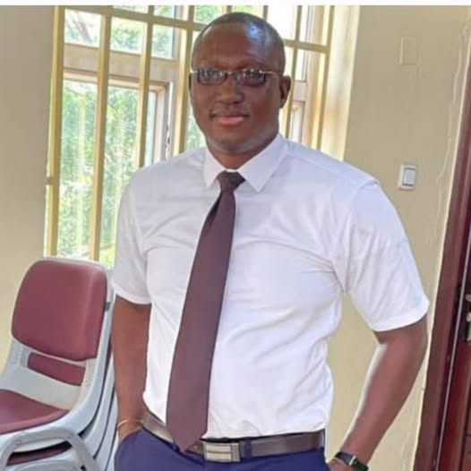

Obinna Godswill Sosthenes Njoku | WDD 130
Hello people! My name is Obinna Godswill Sosthenes Njoku, I hail from Owerri in Imo state, Nigeria. I am currently in BYU Idaho pursuing a degree in Web Design and Development. I have always had a passion for technology and the internet. I am excited to learn more about web development and design through this program. As a student, I am eager to gain practical skills and knowledge that will help me succeed in the field. I am also looking forward to collaborating with my peers and instructors to create innovative and engaging websites. In my free time, I enjoy reading tech blogs, experimenting with new software, and exploring the latest trends in web design. I am excited to see where this program will take me and I am committed to working hard to achieve my goals. Thank you for taking the time to learn a little bit about me! I am also a member of The Church of Jesus Christ of Latter-day Saints and I am grateful for the opportunity to serve a mission in Nigeria. There are currently three temples in Nigeria, and they are located in Aba, Benin City, and Abuja. MOre are still being built. Thanks to our father in heaven for the blessings of temples and the opportunity to participate in sacred ordinances.